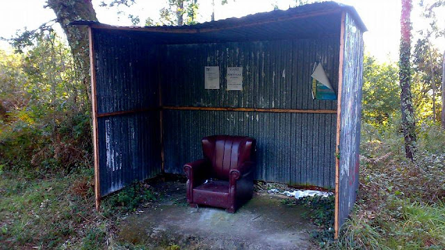

Un género fotográfico con mercado consolidado
Este proyecto se enmarca en un género fotográfico con sólida trayectoria internacional. En 2014, el fotolibro Soviet Bus Stops de Christopher Herwig (Fuel Publishing) consolidó la documentación de marquesinas como género editorial de alcance global, con cobertura en The Guardian, BBC y CNN, y múltiples reediciones.
Más recientemente, en España, el proyecto Detener el paisaje de Bego Amaré —documentación de las marquesinas rojas de la Comunidad de Madrid— ha demostrado viabilidad de mercado nacional mediante campaña de micromecenazgo en Verkami y edición de un fotolibro de 128 páginas.
Sin embargo, ninguno de estos proyectos se ha ocupado de Galicia, territorio que presenta una singularidad incomparable: la coexistencia de modelos industriales con piezas únicas diseñadas por carpinteros locales, ayuntamientos y propios vecinos, utilizando materiales autóctonos (piedra granítica, madera de roble) y reproduciendo tipologías arquitectónicas tradicionales como el hórreo o el fielato. Mientras el referente soviético explora la arquitectura ideológica y el madrileño el paisaje suburbano, este proyecto documenta la creatividad popular anónima como expresión de identidad rural gallega.

Diversidad tipológica presente en el territorio gallego
.jpg)